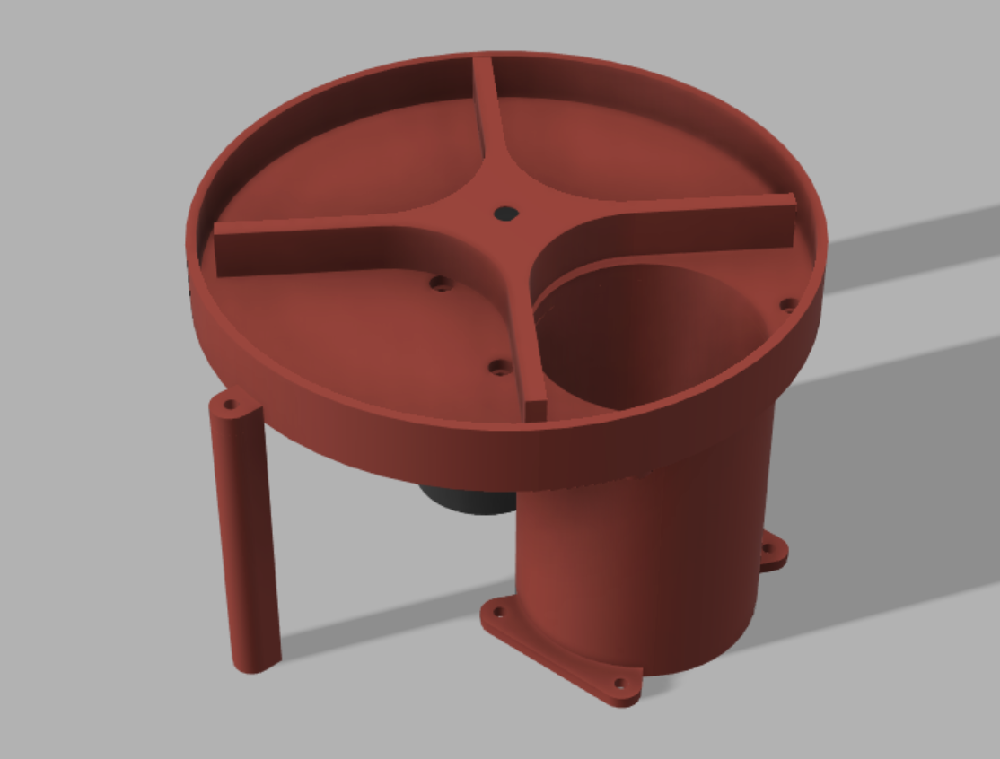

The Old Bear
Team 14's final project robot for ME 210.
Final Project Review
Team 14 · ME 210 · Winter 2026
The Old Bear uses a four-wheel mecanum drivetrain, a rack-and-pinion pusher, and a turntable that stores three pucks and drops them in front of the pusher. The system was built around controlled and predictable puck delivery rather than a shooting-based approach.

Team 14's final project robot for ME 210.
Once aligned in the correct direction, the robot can move freely without rotational movements.
The pusher takes advantage of the 7-inch extension rule and pushes the puck out in a controlled way.
The turntable stores three pucks and drops each puck into position in front of the pusher.
Section 1
For the drivetrain of our robot, we chose the simplest approach by using four Mecanum wheels. With this type of wheel, once the robot is aligned in the correct direction (facing the center of the playground), it can move freely without needing to perform any rotational movements.
For puck delivery, we moved away from shooting and slide mechanisms because they showed instability. Instead, we designed a turntable-fed pusher system so that puck release would be more controlled and predictable.
In tournament code, the robot squares to the wall with ultrasonics, acquires the center line, follows that line to the hog line, actuates the scoring mechanism, and then returns to the square to reload before later attempts.
squareToWall() → alignToLine() → score() → returnToSquare()
Section 2
MS ME
BS EE/CS
MS ME
BS ME
Section 3

For the drivetrain of our robot, we chose the simplest approach by using four Mecanum wheels. With this type of wheel, once the robot is aligned in the correct direction (facing the center of the playground), it can move freely without needing to perform any rotational movements.
At first, we considered using a shooting or slide mechanism, but both mechanisms showed some instability. Because of this, we decided to choose a design that would be more controlled and predictable. Therefore, we decided to design a pusher to push the puck out, taking advantage of the rule that allows up to 7 inches of extension.
Initially, we planned to use a lead screw to convert rotational motion into linear motion. However, we later switched to a rack and pinion mechanism because this design is simpler while also allowing the pusher to move faster.
After deciding to use rack and pinion, we directly attached the pusher head to the rack. We also purchased a Linear Rail Guide with a Carriage Block to connect our base with the rack. This helps reduce friction, enable smoother movement, and constrain the pusher to move only in one direction.
.png)
After designing the pusher mechanism, we needed another mechanism to store three pucks and allow them to drop in front of the pusher. We determined that the simplest solution would be to use a turntable.
With this design, we only need a motor with sufficient torque to rotate the turntable while holding three pucks, and a hole cut into the turntable so that each puck can drop into position. The calculation for the required motor torque is provided at the end of this section for reference.

Allows a low-power control signal to safely control the higher voltage and current required to run a motor, often enabling speed and direction control.
This sensor was used to detect the hog line and for line tracing to correct for using mecanum drive without encoders, allowing the robot to drive in a straight line without veering off course.
This sensor was used to detect distances between the robot and the walls that encase the arena. These measurements were then used to correct the robot's orientation and later confirm its position relative to the walls.
12V 60 RPM Gear Motor - High Torque 6.5 kg·cm
12V 10 RPM Gear Motor - High Torque 15 kg·cm
12V 150 RPM Gear Motor - High Torque 5 kg·cm
Section 4
N = W = 0.5 lbf
μs ≈ 0.25 - 0.45
μk ≈ 0.20 - 0.35
Fs,max = μsN ≈ (0.25 - 0.45)(0.5) ≈ 0.125 - 0.225 lbf
Fk,max = μkN ≈ (0.20 - 0.35)(0.5) ≈ 0.10 - 0.175 lbf
Fdesign = 0.5 lbf
T = Fpush · rp
rp = 0.5 in to 1 in
T = 0.5 in · 0.5 lbf = 0.25 lbf·in
1 lbf·in = 16 oz·in
T = 0.25 × 16 = 4 oz·in
Ttarget = 15 - 30 oz·in
Ttarget ≈ 1.1 - 2.2 kg·cm
rev = x / (2πrp)
If rp = 0.5 in, rev = 7 / (2π(0.5)) = 7/π ≈ 2.23 rev
Circumference ≈ 3.14 in/rev
At 60 RPM, v ≈ 3.14 in/s
t ≈ 7 / 3.14 ≈ 2.2 s
Mrobot = 2mbattery + 4mmotor + 4mwheels + 3mpuck + mchassis + melectronics + mdelivery
= 2(0.45 kg) + 4(0.235 kg) + 0.45 kg + 3(0.227 kg) + mchassis + melectronics + mdelivery
= 2.971 kg + mdelivery + mchassis + melectronics
Design estimate: Mrobot ≈ 5 kg
Want 150 - 300 RPM with ≈ 5 kg·cm torque total among wheels
Given 130 RPM, 1.2 kg·cm rated torque, 12 V motor
τ = 1.2 kg·cm ⇒ 0.118 N·m ⇒ 4.8 kg·cm as a system
Fwheel = τ / rwheel = 0.118 N·m / 0.0485 m ≈ 2.4 N per wheel
All 4 wheels: 9.7 N
a ≈ F / m ≈ 9.7 N / 5 kg = 1.94 m/s² ⇒ ok
Section 5
The scoring loop is implemented as a sequential set of alignment, line acquisition, scoring, and reset behaviors.
Use ultrasonics to figure out rotation of bot, and rotate accordingly.
Once facing forward, strafe left and move back to home to corner of arena.
Strafe right until the centre line.
Follow centre line to hog lines.
Drop puck, extend pusher, retract pusher (repeat 3x).
Follow centre line to back.
Strafe left till back in corner.
Wait 5 seconds, get reloaded, strafe to centre line, repeat.
Section 6
The tournament robot ran from a single Arduino Mega master script. The code defines four drivetrain
PWM channels, dedicated turntable and pusher outputs, three IR sensors, and three ultrasonic
sensors. setup() initializes all drivetrain and actuator outputs, configures the ultrasonic pins,
stops the system, and exposes a serial command interface for manual testing.
Although manual commands remained available through serial input, the tournament behavior was driven
directly from loop(). The autonomous path called squareToWall(), alignToLine(), score(),
and returnToSquare(), then repeated with timed lateral offsets for later scoring attempts.
IR_THRESH is set to 200 for tape detection.squareToWall() uses a 45 cm ultrasonic threshold and temporarily reduces turn speed to 130 PWM for precision rotation.alignToLine() begins with a slow right strafe at roughly 76 PWM, then follows the line at 120 PWM.30 and 100 PWM to steer back onto the line.returnToSquare() reverses at 90 PWM and finishes with a 120 PWM left strafe into the corner.
squareToWall() implements the core ultrasonic orientation routine. It reads the left, right,
and back sensors, classifies the robot's heading from wall visibility, and preserves a turnDir
state so the chassis keeps rotating through ultrasonic blind spots instead of stalling on 999
timeout readings.
Once forward orientation is locked, the code transitions into a back-left tuck toward the corner.
alignToLine() then strafes right until the back-center IR sensor crosses the threshold, after
which the front-left and front-right sensors handle differential line following. The hog line stop
condition is explicit: both front sensors must simultaneously detect black tape.
The actual score() function is more specific than the high-level summary. For each scoring cycle,
the turn motor is driven at full PWM for 1.5 seconds, the pusher extends at full PWM for 3
seconds, and the pusher retracts at full PWM for another 3 seconds. That inner cycle is repeated
three times.
The top-level tournament loop then executes three attack positions: one centered scoring pass, one
pass with a short right strafe of 300 ms, and one pass with a short left strafe of 300 ms. Each
of the later passes is separated by a five-second reload delay and a fresh line-acquisition phase.
Section 7
The full tournament Arduino script is included below. This is the exact me210_tourneycode.ino
file used as the software source for this report.
// --- Mega Master Script (V7: Full Autonomous & Manual Control) ---
// --- 1. Constants & Variables ---
int speedFL = 200;
int speedFR = 200;
int speedBL = 200;
int speedBR = 200;
const int IR_THRESH = 200; // Adjust based on your serial plotter values
const long TARGET_BACK_CM = 15; // Adjust for arena
const long TARGET_SIDE_CM = 15; // Adjust for arena
// --- 2. Pin Definitions ---
// Drivetrain
#define FL_PWM 2
#define FL_IN1 22
#define FL_IN2 24
#define FR_PWM 3
#define FR_IN1 26
#define FR_IN2 28
#define BL_PWM 4
#define BL_IN1 30
#define BL_IN2 32
#define BR_PWM 5
#define BR_IN1 34
#define BR_IN2 36
// Shooter
#define TURN_PWM 6
#define TURN_IN1 38
#define TURN_IN2 40
#define PUSH_PWM 7
#define PUSH_IN1 42
#define PUSH_IN2 44
// Sensors
#define IR_FL A0
#define IR_FR A1
#define IR_BC A2
#define US_BACK_TRIG 46
#define US_BACK_ECHO 47
#define US_LEFT_TRIG 48
#define US_LEFT_ECHO 49
#define US_RIGHT_TRIG 50
#define US_RIGHT_ECHO 51
unsigned long lastPrintTime = 0;
// --- 3. Setup ---
void setup() {
Serial.begin(9600);
int outputPins[] = {2, 22, 24, 3, 26, 28, 4, 30, 32, 5, 34, 36, 6, 38, 40, 7, 42, 44};
for (int i = 0; i < 18; i++) { pinMode(outputPins[i], OUTPUT); }
pinMode(US_BACK_TRIG, OUTPUT); pinMode(US_BACK_ECHO, INPUT);
pinMode(US_LEFT_TRIG, OUTPUT); pinMode(US_LEFT_ECHO, INPUT);
pinMode(US_RIGHT_TRIG, OUTPUT); pinMode(US_RIGHT_ECHO, INPUT);
stopAll();
Serial.println("--- System Online ---");
Serial.println("Manual: WASD (Drive), QE (Turn), T/O/I (Shooter) format: [Key][Seconds]");
Serial.println("Auto: Z (Square), C (Align Line), M (Master Sequence)");
}
// --- 4. Main Loop ---
void loop() {
// Background sensor printing
if (millis() - lastPrintTime > 100) {
printSensors();
lastPrintTime = millis();
}
if (Serial.available() > 0) {
char cmd = Serial.read();
float seconds = Serial.parseFloat();
// Default time if no number is provided (ignored by autonomous functions)
if (seconds <= 0) seconds = 0.1;
unsigned long duration = seconds * 1000;
executeAction(cmd, duration);
// Clear buffer
while(Serial.available() > 0) Serial.read();
}
squareToWall();
alignToLine();
score();
returnToSquare();
delay(5000);
alignToLine();
strafeRight();
delay(300);
stopAll();
score();
strafeLeft();
delay(300);
stopAll();
returnToSquare();
delay(5000);
alignToLine();
strafeLeft();
delay(300);
stopAll();
score();
}
// --- 5. Sensor Logic ---
long readUS(int trigPin, int echoPin) {
digitalWrite(trigPin, LOW); delayMicroseconds(2);
digitalWrite(trigPin, HIGH); delayMicroseconds(10);
digitalWrite(trigPin, LOW);
long duration = pulseIn(echoPin, HIGH, 30000);
if (duration == 0) return 999;
return duration * 0.034 / 2;
}
void printSensors() {
int irFL = analogRead(IR_FL);
int irFR = analogRead(IR_FR);
int irBC = analogRead(IR_BC);
long usBack = readUS(US_BACK_TRIG, US_BACK_ECHO);
long usLeft = readUS(US_LEFT_TRIG, US_LEFT_ECHO);
long usRight = readUS(US_RIGHT_TRIG, US_RIGHT_ECHO);
Serial.print("IR[FL:"); Serial.print(irFL);
Serial.print(" FR:"); Serial.print(irFR);
Serial.print(" BC:"); Serial.print(irBC);
Serial.print("] | US_cm[Back:"); Serial.print(usBack);
Serial.print(" L:"); Serial.print(usLeft);
Serial.print(" R:"); Serial.print(usRight);
Serial.println("]");
}
void delayAndPrint(unsigned long ms) {
unsigned long start = millis();
while (millis() - start < ms) {
if (millis() - lastPrintTime > 100) {
printSensors();
lastPrintTime = millis();
}
}
}
// --- 6. Autonomous Strategies ---
void squareToWall() {
Serial.println("Phase 1: Pure Rotation...");
const int THRESH = 45;
// Temporarily lower speed for precision turning so we don't overshoot
int tempFL = speedFL; int tempFR = speedFR;
int tempBL = speedBL; int tempBR = speedBR;
speedFL = 130; speedFR = 130; speedBL = 130; speedBR = 130;
// 1 = Right (CW), -1 = Left (CCW). Default to scanning right.
int turnDir = 1;
// --- Phase 1: ONLY Turning ---
while (true) {
long l = readUS(US_LEFT_TRIG, US_LEFT_ECHO);
long r = readUS(US_RIGHT_TRIG, US_RIGHT_ECHO);
long b = readUS(US_BACK_TRIG, US_BACK_ECHO);
// 1. LOCKED (Forward)
if (l < THRESH && b < THRESH && l != 999 && b != 999) {
stopAll();
Serial.println("Forward orientation locked.");
break;
}
// 2. Facing Right (Right and Back see the corner walls)
else if (r < THRESH && b < THRESH && r != 999 && b != 999) {
turnDir = -1; // Set momentum to Left
}
// 3. Facing Left (Left sees Back wall, Back is open to arena)
else if (l < THRESH && l != 999 && (b > THRESH || b == 999)) {
turnDir = 1; // Set momentum to Right
}
// 4. Facing Backwards (Right sees Left wall, Back is open to arena)
else if (r < THRESH && r != 999 && (b > THRESH || b == 999)) {
turnDir = -1; // Set momentum to Left
}
// 5. Diagonal Blindspot (999s)
// Notice there is NO "else" statement changing turnDir here.
// It just remembers the last known direction and coasts through the blindspot!
// Execute the turn based on current momentum
if (turnDir == 1) rotateRight();
else rotateLeft();
delayAndPrint(40);
}
stopAll();
delay(200);
// Restore your normal driving speeds for the translation phase
speedFL = tempFL; speedFR = tempFR;
speedBL = tempBL; speedBR = tempBR;
// --- Phase 2: ONLY Translating (The Tuck) ---
Serial.println("Phase 2: Translating Back-Left to Corner...");
unsigned long lockedTime = 0;
bool isSquared = false;
while (!isSquared) {
long l = readUS(US_LEFT_TRIG, US_LEFT_ECHO);
long b = readUS(US_BACK_TRIG, US_BACK_ECHO);
// Goal: Both sensors under 10cm for 2 continuous seconds
if (l < 5 && b < 3 || b > 980 && l != 999 && b != 999) {
stopAll();
if (lockedTime == 0) {
lockedTime = millis();
Serial.println("In position. Holding for 2 seconds...");
} else if (millis() - lockedTime >= 2000) {
isSquared = true;
}
}
// If we drift outside 10cm, reset timer and correct
else {
if (lockedTime != 0) {
Serial.println("Lost position. Adjusting...");
lockedTime = 0;
}
if ((l >= 6 || l == 999) && (b >= 6 || b == 999)) {
moveBackLeft(); // Diagonal drive
} else if (b >= 10 || b == 999) {
moveBackward();
} else if (l >= 10 || l == 999) {
strafeLeft();
}
}
delayAndPrint(20);
}
Serial.println("Perfectly Squared and Verified.");
}
void alignToLine() {
Serial.println("Initiating: Strafe to Center and Approach Hog Line...");
// Save your normal driving speeds so we don't permanently overwrite them
int tempFL = speedFL; int tempFR = speedFR;
int tempBL = speedBL; int tempBR = speedBR;
// --- Phase 1: Strafe Right Slowly (15% Speed) ---
speedFL = 38*2; speedFR = 38*2; speedBL = 38*2; speedBR = 38*2; // 15% of 255
Serial.println("Phase 1: Strafing Right at 15% to find center line...");
strafeRight();
// Keep strafing until the Back-Center sensor hits the black tape (> IR_THRESH)
while (analogRead(IR_BC) < IR_THRESH) {
delayAndPrint(10);
}
stopAll();
delay(200); // Let the momentum settle before switching to forward drive
// --- Phase 2: Follow Line (30% Speed) ---
speedFL = 120; speedFR = 120; speedBL = 120; speedBR = 120; // 30% of 255
Serial.println("Phase 2: Following line at 30% to hog line...");
// Loop continuously until we hit the cross-line
while (true) {
int valFL = analogRead(IR_FL);
int valFR = analogRead(IR_FR);
// THE STOP CONDITION: Both front sensors see black tape (The Hog Line)
if (valFL > IR_THRESH && valFR > IR_THRESH) {
stopAll();
Serial.println("Hog line detected! Stopping.");
break;
}
// LINE FOLLOWING CORRECTIONS (Differential Steering)
if (valFL > IR_THRESH && valFR < IR_THRESH) {
// Drifting Right: Left sensor hit the tape -> Steer Left
// Left wheels run slow (30), Right wheels run fast (100)
runMotor(2,22,24,false, 30);
runMotor(3,26,28,false, 100);
runMotor(4,30,32,false, 100);
runMotor(5,34,36,false, 30);
}
else if (valFR > IR_THRESH && valFL < IR_THRESH) {
// Drifting Left: Right sensor hit the tape -> Steer Right
// Left wheels run fast (100), Right wheels run slow (30)
runMotor(2,22,24,false, 100);
runMotor(3,26,28,false, 30);
runMotor(4,30,32,false, 30);
runMotor(5,34,36,false, 100);
}
else {
// Perfectly straddling the line -> Drive Straight at 30%
moveForward();
}
delayAndPrint(10);
}
// Restore your original driving speeds
speedFL = tempFL; speedFR = tempFR;
speedBL = tempBL; speedBR = tempBR;
Serial.println("Ready to curl.");
}
void score() {
Serial.println("shooting");
const unsigned long t_ms = 3000;
for (int rep = 0; rep < 3; rep++) {
Serial.print("Score cycle "); Serial.println(rep + 1);
// T3: turn motor forward @ full speed for 3s
runMotor(TURN_PWM, TURN_IN1, TURN_IN2, true, 255);
delayAndPrint(1500);
stopAll();
delay(150);
// O3: push motor forward @ full speed for 3s
runMotor(PUSH_PWM, PUSH_IN1, PUSH_IN2, true, 255);
delayAndPrint(t_ms);
stopAll();
delay(150);
// I3: push motor reverse @ full speed for 3s
runMotor(PUSH_PWM, PUSH_IN1, PUSH_IN2, false, 255);
delayAndPrint(t_ms);
stopAll();
delay(300);
}
Serial.println("shooting complete");
}
void returnToSquare() {
Serial.println("Initiating: Return to Square (Line Follow Reverse)...");
// Save standard driving speeds
int tempFL = speedFL; int tempFR = speedFR;
int tempBL = speedBL; int tempBR = speedBR;
// --- Phase 1: Follow Line Backwards ---
Serial.println("Phase 1: Following line backwards to wall...");
speedFL = 90; speedFR = 90; speedBL = 90; speedBR = 90; // Smooth reverse speed
while (true) {
long b = readUS(US_BACK_TRIG, US_BACK_ECHO);
// STOP CONDITION: Back sensor sees the wall
if (b < 10 && b != 999) {
stopAll();
Serial.println("Back wall reached.");
break;
}
int valFL = analogRead(IR_FL);
int valFR = analogRead(IR_FR);
// BACKWARD LINE FOLLOWING CORRECTIONS (Differential Steering)
if (valFL > IR_THRESH && valFR < IR_THRESH) {
// Drifting Right: FL hits tape -> Steer Left while reversing
// Right wheels reverse fast, Left wheels reverse slow
runMotor(2,22,24,true, 60); // FL Reverse Slow
runMotor(3,26,28,true, 130); // FR Reverse Fast
runMotor(4,30,32,true, 130); // BR Reverse Fast (Pin 4)
runMotor(5,34,36,true, 60); // BL Reverse Slow (Pin 5)
}
else if (valFR > IR_THRESH && valFL < IR_THRESH) {
// Drifting Left: FR hits tape -> Steer Right while reversing
// Left wheels reverse fast, Right wheels reverse slow
runMotor(2,22,24,true, 130); // FL Reverse Fast
runMotor(3,26,28,true, 60); // FR Reverse Slow
runMotor(4,30,32,true, 60); // BR Reverse Slow (Pin 4)
runMotor(5,34,36,true, 130); // BL Reverse Fast (Pin 5)
}
else {
// Perfectly straddling the line -> Reverse Straight
moveBackward();
}
delayAndPrint(10);
}
delay(200); // Let momentum settle
// --- Phase 2: Strafe Left into Corner ---
Serial.println("Phase 2: Strafing left to corner...");
speedFL = 120; speedFR = 120; speedBL = 120; speedBR = 120; // Strafe power
while (true) {
long l = readUS(US_LEFT_TRIG, US_LEFT_ECHO);
// STOP CONDITION: Left sensor sees the wall
if (l < 10 && l != 999) {
stopAll();
Serial.println("Left wall reached. Fully returned.");
break;
}
strafeLeft();
delayAndPrint(20);
}
// Restore driving speeds
speedFL = tempFL; speedFR = tempFR;
speedBL = tempBL; speedBR = tempBR;
}
// --- 7. Drivetrain & Commands ---
void executeAction(char cmd, unsigned long ms) {
switch (cmd) {
// Manual Time-Based Control
case 'w': case 'W': moveForward(); delayAndPrint(ms); break;
case 's': case 'S': moveBackward(); delayAndPrint(ms); break;
case 'a': case 'A': strafeLeft(); delayAndPrint(ms); break;
case 'd': case 'D': strafeRight(); delayAndPrint(ms); break;
case 'q': case 'Q': rotateLeft(); delayAndPrint(ms); break;
case 'e': case 'E': rotateRight(); delayAndPrint(ms); break;
case 't': case 'T': runMotor(6, 38, 40, true, 255); delayAndPrint(ms); break;
case 'o': case 'O': runMotor(7, 42, 44, true, 255); delayAndPrint(ms); break;
case 'i': case 'I': runMotor(7, 42, 44, false, 255); delayAndPrint(ms); break;
// Autonomous Sequences
case 'z': case 'Z': squareToWall(); break;
case 'c': case 'C': alignToLine(); break;
case 'x': case 'X': score(); break;
// Master Sequence
case 'm': case 'M':
Serial.println("--- Starting Master Sequence ---");
squareToWall();
alignToLine();
score();
Serial.println("--- Master Sequence Complete ---");
break;
default: return;
}
stopAll();
}
void runMotor(int pwm, int in1, int in2, bool dir, int s) {
analogWrite(pwm, s);
digitalWrite(in1, dir ? HIGH : LOW);
digitalWrite(in2, dir ? LOW : HIGH);
}
// --- Logic Corrected for Swapped Pins 4 & 5 ---
void moveForward() {
runMotor(2,22,24,false,speedFL); runMotor(3,26,28,false,speedFR);
runMotor(4,30,32,false,speedBR); runMotor(5,34,36,false,speedBL);
}
void moveBackward() {
runMotor(2,22,24,true,speedFL); runMotor(3,26,28,true,speedFR);
runMotor(4,30,32,true,speedBR); runMotor(5,34,36,true,speedBL);
}
void strafeRight() {
runMotor(2,22,24,false,speedFL); runMotor(3,26,28,true,speedFR);
runMotor(4,30,32,false,speedBR); runMotor(5,34,36,true,speedBL);
}
void strafeLeft() {
runMotor(2,22,24,true,speedFL); runMotor(3,26,28,false,speedFR);
runMotor(4,30,32,true,speedBR); runMotor(5,34,36,false,speedBL);
}
void rotateRight() {
runMotor(2,22,24,false,speedFL); runMotor(3,26,28,true,speedFR);
runMotor(4,30,32,true,speedBR); runMotor(5,34,36,false,speedBL);
}
void rotateLeft() {
runMotor(2,22,24,true,speedFL); runMotor(3,26,28,false,speedFR);
runMotor(4,30,32,false,speedBR); runMotor(5,34,36,true,speedBL);
}
void moveBackLeft() {
// Mecanum Diagonal Back-Left: FL(Bwd), FR(Stop), BL(Stop), BR(Bwd)
runMotor(2,22,24,true,speedFL); // FL Backward
runMotor(3,26,28,false,0); // FR Stop
runMotor(4,30,32,true,speedBR); // BR Backward
runMotor(5,34,36,false,0); // BL Stop
}
void stopAll() {
for (int p = 2; p <= 7; p++) { analogWrite(p, 0); }
}Section 8
The results show a system with one strong core behavior and one clear weakness. The first scoring cycle was reliable and the pusher performed well, but line following remained less precise than desired. The main issue was sensor placement at the outer edges of the front of the robot, which reduced the system's ability to stay centered cleanly.
Section 9
Several late-stage issues came from unnecessary hardware, missing calibration, limited cycle testing, and delayed assembly decisions.
The main lessons are about scope discipline and integration timing. Some instrumentation turned out to be unnecessary, other sensing proved more critical than expected, and the lack of repeated full-cycle testing hid important issues. On top of that, assembly bottlenecks reduced iteration time when the team most needed it.